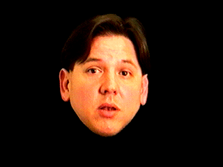

Patrick Douglas Quick
as "PDQ"

PDQ takes the form of a floating media-generated head, a projected presence emanating from within a television screen. Unlike traditional video media PDQ has a live interactive presence (Patrick Douglas Quick), and is informed via hidden video cameras such that he can see what is going on in the performance space. A video camera simultaneously records Doug as the floating head and Doug, through the hidden camera, responds to circumstances within the performance space creating a live interactive media presence. The format of PDQ takes place within a series of vignettes, which are back-dropped by seemingly nonsensical word associations.
to Return